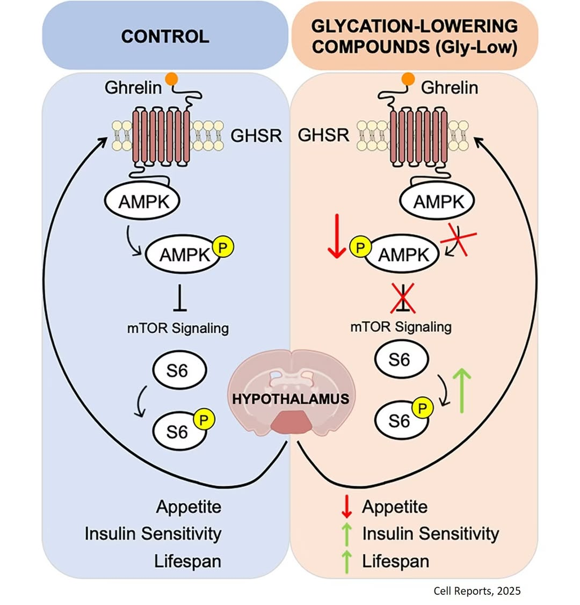

Link to the full study:
 SciencemissionHabitual coffee intake shapes the gut microbiome and modifies host physiology and cognitionsciencemission.com
SciencemissionHabitual coffee intake shapes the gut microbiome and modifies host physiology and cognitionsciencemission.com
A shared summary of a study comparing 31 habitual coffee drinkers (3-5 cups/day) with 31 non-drinkers, assessing microbiome, mood and stress, including a two-week abstinence period.
Link to the full study:
SciencemissionHabitual coffee intake shapes the gut microbiome and modifies host physiology and cognitionsciencemission.com
Mechanisms behind coffee’s positive effects on the gut-brain axis
The benefits of coffee for both digestion and mood have been widely studied, but the exact mechanisms behind these effects have remained unclear. This research investigated how coffee consumption affects the microbiota-gut-brain axis – the bidirectional communication between the gut microbiome and the brain - through a wide range of measures.
31 coffee drinkers and 31 non-coffee drinkers were closely studied through a series of psychological tests, caffeine and food diaries, and stool and urine samples to understand changes in their microbiome and perceived mood or stress. ‘Coffee drinkers’ were set as those who regularly consume 3-5 cups of coffee a day – defined by the European Food Safety Authority (EFSA) as a safe and moderate amount for most people.
Participants first abstained from coffee for two-weeks, with regular psychological assessments, as well as stool and urine samples throughout. This period of abstinence for coffee-drinkers corresponded with significant changes in metabolite profiles in the gut microbiome, compared to non-coffee drinkers.
Coffee was reintroduced to regular drinkers on a blinded basis, with half of participants consuming decaffeinated coffee and the other half caffeinated coffee. Both groups reported lower perceived stress, depression and impulsivity scores, suggesting that drinking coffee significantly improved mood, regardless of caffeine content.
Bacteria, such as ‘Eggertella sp’ or ‘Cryptobacterium curtum’, were notably increased in coffee-drinkers compared to non-coffee drinkers. The former is thought to contribute to gastric and intestinal acid secretion, while the latter is thought to be involved in bile acid synthesis - both of which may play a role in eliminating unhealthy gut bacteria and stomach infections. Increased ‘Firmicutes’ bacteria were also observed, which has been associated with positive emotions in females.
A notable improvement in learning and memory was found only in those who consumed decaffeinated coffee, suggesting that components other than caffeine, such as polyphenols, are responsible for these cognitive benefits. However, in this study the researchers found that only caffeinated coffee was associated with reduced feelings of anxiety, as well as improved vigilance and attention. Caffeine was also linked to a reduced risk of inflammation.
#ScienceMission #sciencenewshighlights

Louis shares a Cell Reports study in mice where a combination of nicotinamide, alpha-lipoic acid, thiamine, pyridoxamine and piperine (Gly-Low) lowered AGEs, curbed hunger, improved insulin resistance and extended lifespan. It is preclinical.

Medscape reports that coffee's effect on gut motility seems to involve other compounds interacting with microbiota, as caffeine alone did not speed recovery after GI surgery.
A review-style explainer on organic versus conventional food. It clarifies that the USDA Organic label certifies farming practices rather than health claims, and that organic farming still permits some pesticides. The core tension is a clear drop in pesticide exposure against more complex evidence for long-term health benefit.

An advocacy-style essay arguing that glyphosate should be avoided. It cites the 2015 IARC classification as probably carcinogenic to humans, based on limited human evidence of non-Hodgkin lymphoma, sufficient animal evidence and strong mechanistic evidence. Not specific to heart disease.

A comprehensive overview of glyphosate use and the regulatory split over its safety. Use rose about 15-fold after GM crops in 1996, and pre-harvest desiccation of oats, wheat and legumes explains high residues in some non-GM foods. IARC and other agencies reached different conclusions on cancer risk.
A phase II trial in Science Advances found that the constipation drug lubiprostone (16 ug daily) preserved eGFR over 24 weeks versus decline on placebo. Surprisingly, it did not cut uremic toxins; instead it shifted the gut microbiome and raised spermidine. Kidney disease commonly accompanies heart disease.